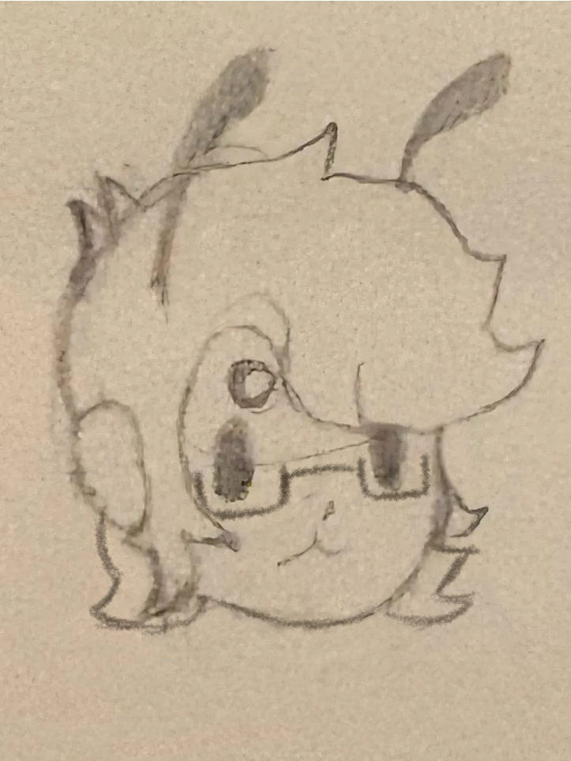

The Terrariums

he/him
| Name | Yves Macaroni |
| Birthday | September 8 |
| Size | Big and soft and round 6'3 |
| Breed | Myxic |
| Sex | Oh, all the time with Toys. That's a capital T for a name, by the way. |
| Comes from | susnet |
Background: He came to Earth to seek new experiences and learn more about Terra.

 Open relationship")
 Casual relationship")
| Favorite activity: | Being a present father |
| Favorite food: | Trail mix |
| Favorite drink: | PVA white glue |
| Favorite toy: | Cog rattle |
| Personal item: | Pocket knife |
Fun Facts:
- He is illiterate.
- He prefers to dispose of his eggs by eating them.
- He is transgender due to his desire to integrate with human society.
Distinct features: Pearlescent white freckles and curious eyes.
Personality: When he has a plan, he is willing to do anything to achieve it.
Fashion sense: He enjoys patterned overshirts and casual, comfortable pants with house slippers. He frequently uses hair accessories and stickers to decorate himself since piercinsg aren't possible.
Other notes:
Averse to:
Plays well with: Marlowe Miracle (Casual)
Separate from: